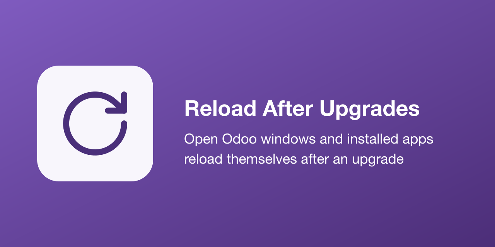

After an upgrade, windows that were already open keep running the old screens until someone reloads them, and the installed (PWA) app often has no reload button.
This module notices the upgrade and reloads the window for you.
Checks when the window comes back to the front, when the connection reconnects, and every ten minutes.
Saves the open record before reloading; if it can't, or a dialog is open, it asks instead.
Clears the browser caches so the new screens load.
This module is free. Help installing, setting up or using it is available from Meskis Works with a support contract: sales@meskis.net.